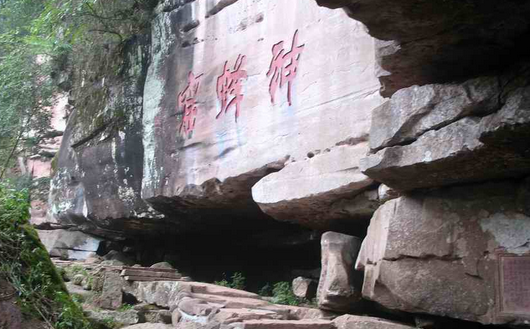

台州旅游网 2016-06-20
天台山(tiān tāi shān)位于中国浙江省天台县城北，西南连仙霞岭，东北遥接舟山群岛。为曹娥江与甬江的分水岭。主峰华顶山在天台县东北，海拔1098米公尺(3602呎)，由花岗岩构成。多悬岩、峭壁、瀑布。浙江天台山位于浙江省中东部，地处宁波、绍兴、金华、温州四市的交接地带。素以"佛宗道源、山水神秀"享誉海内外;1988年被国务院批准为国家重点风景名胜区，1992年被列为"浙江省十大旅游胜地"，2015年被国家旅游局评为AAAAA级旅游区。天台山属仙霞岭分支，呈西南-东北走向，平均海拔500米以上，主峰华顶山海拔1098米。天台山位于浙江省中东部，地处宁波、绍兴、金华、温州四市的交接地带。素以"佛宗道源、山水神秀"享誉海内外。多悬岩、峭壁、瀑布，以石梁瀑布最有名。折叠景区构成华顶归云华顶归云主要由国清、赤城、佛陇、石梁(铜壶、华顶)、百丈(琼台)、桐坑溪(万年寺、桃源、清溪、开岩紫凝、寒山湖、明寒岩、九遮山构成。山系天然成趣，别具一格、各擅其胜，美不胜收。景致以石梁飞瀑、华顶归云为最。

天台山物华天宝，资源丰富。有九天台山天台山大仙草之首、轻身延年的"铁皮枫斛"，有誉为长生不老的天台山"乌药"，有仙道食粮"黄精"，名扬四海的"笋干片"，有脆嫩透明的"豆腐皮"等。天台山云雾茶、天台山蜜桔、小红毛花生更是久负盛名。天台山蜜桔、小红毛花生更是久负盛名。盛产杉木、柑橘、药材。天台是中国最早产茶地之一。天台山盛产优质高山茶叶--云雾茶，还诞生了东方茶文化--中国茶道。天台山还盛产中药材、有白术、茯苓、石斛等名贵药材1000余种。"天台乌药"品质独特，是中医的"长生不老药"。"石梁"牌高山蔬菜生长在千米高山，是无污染的绿色产品，已远销上海、山东、福建、江苏、香港、澳门。
天台山秀丽的山水，令无数文人骚客为其倾倒。"天台山者，盖山岳之神秀者也"，"穷山海之瑰富，尽人神之壮丽矣"天台山的自然景观得天独厚，有那画不尽的奇石、幽洞、飞瀑、清泉，说不完的古木、名花、珍禽、异徐霞客观瀑处观瀑徐霞客观瀑处观瀑兽，"山水神秀"，是天然的植物园和动物园。奇草异木、珍禽异兽极多。有隋梅、唐樟、宋柏、宋藤，有被称为"长生不老药"的乌药和"救命仙草"的铁皮石斛。尤其是广布千米高山的云锦杜鹃，龄逾百年，古干如铁，虬枝如钩，枝繁叶茂。每年暮春，淡红、嫩黄之花竞相开放，花大而艳，一树千葩，团花锦簇，望之似锦若霞。树之古、面之广、花之盛，全国少见，为天台山一大植物奇观。杜鹃是在灵气浸润之下，生长在天台山上。是目前世界上最古老、最高、最大的"杜鹃之王"，生长在天台山华顶峰海拔1200米，面积近300亩的山间，树龄大多在400年至1000年之间，树干如铁，虬枝如钩，枝繁叶茂，独具气势。每年5月，云锦杜鹃花树争相竞放，淡红、嫩黄的花朵大而艳。每株树上的逾千朵杜鹃又每每分作7至13朵小杜鹃花蜷成一团，形成一簇碗口大的花束，花束再一团团地簇在一起，看上去似锦若霞，十分艳丽。因此云锦杜鹃又有个很形象的名字叫做"千花杜鹃"。另外，还有大灵猫、 苏门羚、云豹等珍稀野生动物。这些都极大地丰富了天台山的风景旅游资源。 

徐霞客 在浙江台州的天台县，来过这样一个名人，他就是经30年考察撰成60万字地理名著《徐霞客游记》，被称为“千古奇人”的徐霞客。在《徐霞客游记》开篇中就有一段对台州天台山的描写：“雨后新霁，泉声山色，往复创变，翠丛中山鹃映发，令人攀历忘苦。”昨天，3000多名游客聚集在台州市天台县的泳溪乡，想一探书中的绿水青山，一起“跟着霞客游泳溪”。上午九点半，活动正式拉开序幕。泳溪乡位于浙江省台州市天台县的东北部，有着良好的生态环境和优美的自然景观，是徐霞客游天台山的首到地、首餐地和首宿地。泳溪乡的岩下方村是这次“跟着霞客游泳溪”活动的首站。这次活动通过以徐霞客为媒，在岩下方村与游客之间搭起桥梁，让更多的人来了解书中的岩下方。活动现场，聚集了来自各地的游客，大家一会给精致的花草来个特写，一会又与石头墙合影，转眼间又跑到小溪里嬉戏，十分热闹。这次活动除了吸引了大量的游客，还请来了来自泳溪小学的 “徐霞客跟随者”。在活动当天，他们穿


评论区
好玩 
还行
不好玩